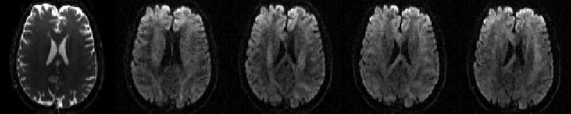
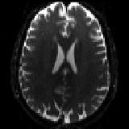
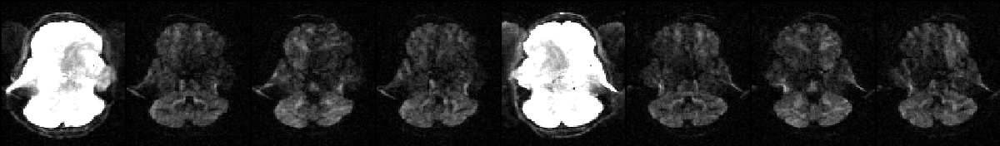

Contents
- Introduction
- Users Guide
- FAQ
Running eddy
Running eddy is a little bit more complicated than running for example its predecessor eddy_correct. The reasons for this are
eddy attempts to combine the correction for susceptibility and eddy currents/movements so that there is only one single resampling. This means we need to "inform" eddy of the results from topup (which is used to calculate the susceptibility distortions).
Unlike eddy_correct, eddy attempts to model the diffusion signal. This means that eddy needs to be informed of the diffusion direction/weighting that was used for each volume.
eddy can utilise the information from different acquisitions that modulate how off-resonance translates into distortions. An example of this would be acquisitions with different polarity of the phase-encoding. Hence we need to inform eddy about how each volume was acquired.
The need to pass more information to eddy results in a more complicated command line. Here I will outline a typical use of topup and eddy (they are really intended to be used together) on a "typical" data set suited for use with eddy.
The data
The data for this example consists of one set of volumes acquired with phase-encoding A>>P consisting of 5 b=0 volumes and 59 diffusion weighted volumes
data.nii.gz |
 |
First b=0 volume and the first four dwis of the A>>P data |
and one single b=0 volume with phase-encoding P>>A.
P2A_b0.nii.gz |
 |
The P>>A data |
Note how the shape of the b=0 scan is different for the two different acquisitions. This is what topup will use in order to calculate the susceptibility induced off-resonance field.
Running topup on the b=0 volumes
The first thing we do is to run topup to estimate the susceptibility induced off-resonance field. In order to prepare the data for topup we issue the following commands
fslroi data A2P_b0 0 1 fslmerge -t A2P_P2A_b0 A2P_b0 P2A_b0 printf "0 -1 0 0.0646\n0 1 0 0.646" > acqparams.txt
The first two commands will produce a file called A2P_P2A_b0.nii.gz containing the two b=0 volume, and the third command will create a file (named acqparams.txt) that informs topup/eddy of how the data was collected. This file is described here, here and in more detail here.
Now it is time to run topup which we do with the command
topup --imain=A2P_P2A_b0 --datain=acqparams.txt --config=b02b0.cnf --out=my_topup_results --iout=my_hifi_b0
which will give us as our main result a file named my_topup_results_fieldcoef.nii.gz which contains an estimate of the susceptibility induced off-resonance field.
Running `eddy`
Before we can run eddy we need to do a couple of more preparations. First of all we need a mask that separate brain from non-brain. This is no different from for example the mask that `dtifit` needs. Since eddy will work in a non-distorted space we will base the mask on my_hifi_b0.nii.gz (the secondary output from our topup command above). We generate this mask with the commands
fslmaths my_hifi_b0 -Tmean my_hifi_b0 bet my_hifi_b0 my_hifi_b0_brain -m
which results in the file my_hifi_b0_brain_mask.nii.gz. It may be a good idea to check this stage to ensure bet has done a good job of extracting the brain.
The final thing we need to do is to create an index file that tells eddy which line/of the lines in the acqparams.txt file that are relevant for the data passed into eddy. In this case all the volumes in data.nii.gz are acquired A>>P which means that the first line of acqparams.txt describes the acquisition for all the volume. We specify that by passing a text file with as many ones as there are volumes in data.nii.gz. One way of creating such a file would be to type the following commands
indx="" for ((i=1; i<=64; i+=1)); do indx="$indx 1"; done echo $indx > index.txt
where 64 is the total number of volumes in data.nii.gz and needs to be replaced by the number of volumes in your data.
We are now in a position to run eddy using the command
eddy --imain=data --mask=my_hifi_b0_brain_mask --acqp=acqparams.txt --index=index.txt --bvecs=bvecs --bvals=bvals --topup=my_topup_results --out=eddy_corrected_data
You may be in for quite a long wait as eddy is quite CPU intensive and also memory hungry. It has been written using OpenMP to take advantage of multiple processors and this may/may not be available to you depending on how it was built in your system. A rule of thumb for how much memory eddy will use is 8*m*nxnynz bytes where m is the number of volumes in --imain, nx is the matrix-size in the x-direction, ny is the matrix size in the y-direction and nz is the number of slices.
List of parameters
- Parameters that specify input files
--imain=filename
Name of a file with input images. E.g. all_my_images.nii. Compulsory.--mask=filename
Name of a file with mask specifying brain vs no-brain. E.g. my_brain_mask.nii. Compulsory.--acqp=filename
Name of text file with information about the acquisition of the images in --imain. E.g. my_scan_pars.txt. Compulsory.--index=filename
Name of text file specifying the relationship between the images in --imain and the information in --acqp and --topup. E.g. index.txt. Compulsory.--bvecs=filename
Name of text-file with normalised diffusion gradients. Compulsory.--bvals=filename
Name of text-file with b-values. Compulsory.--topup=filename
Name of output from a previous topup run. Should be the same as the argument given to topup's --out. Optional.
- Parameters specifying names of output-files
--out=basename
Basename for output-files. The corrected images will be named "basename".nii.gz. Compulsory.
Parameters specifying how eddy should be run
--flm=linear/quadratic/cubic
Spatial model for the field generated by eddy currents. Default quadratic.--fwhm="fwhm in mm"
Filter width to use for pre-filtering of data for the estimation process. Default 0.--niter="required number of iterations"
Specifies how many iterations should be run. Default 5.--verbose
Print progress information to the screen while running. Can be useful to pipe into file before reporting problems--help
Take a wild stab.
Parameters explained
--imain
Should specify a 4D image file with all your images acquired as part of a diffusion protocol. I.e. it should contain both your dwis and your b=0 images. If you have collected your data with reversed phase-encode blips, data for both blip-directions should be in this file.
--mask
Single volume image file with ones and zeros specifying brain (one) and no-brain (zero). Typically obtained by running BET on the first b=0 image. If you have previously run topup on your data I suggest you run BET on the first volume (or the average of all volumes) of the --iout output and use that.
--acqp
A text-file describing the acquisition parameters for the different images in --imain. The format of this file is identical to that used by topup (though the parameter is called --datain there) and described in detail here.
--index
A text-file that determines the relationship between on the one hand the images in --imain and on the other hand the acquisition parameters in --acqp and (optionally) the subject movement information in --topup. It should be a single column (or row) with one entry per volume in --imain. We will use a small (simplified) example to make it clear.

The image above shows a selected slice from each of the eight volumes in --imain. The associated --acqp file is
-1 0 0 0.051
1 0 0 0.051
which specifies that phase-encoding is performed in the x-direction, sometimes traversing k-space left->right (-1) and sometimes right->left (1). Finally the --index file is
1 1 1 1 2 2 2 2
which specifies that the first four volumes in --imain were acquired using the acquisition parameters on the first row (index 1) of the --acqp file, and that volumes 5--8 were acquired according to the second row (index 2).
There are cases when there may be advantageous to have more than two lines in the --acqp file and in these cases there will be more than two different index values in the --index file. These cases are explained here
--bvecs
A text file with normalised vectors describing the direction of the diffusion weighting. This is the same file that you would use for FDT.
--bvals
A text file with b-values () describing the "amount of" diffusion weighting. This is the same file that you would use for FDT.
--out
Specifies the basename of the output. Let us say --out="basename". The output will then consist of a 4D image file named <basename>.nii.gz containing all the corrected volumes and a text-file named <basename>.eddy_parameters with parameters defining the field and movement for each scan.
--topup
This should only be specified if you have previously run topup on your data and should be the same name that you gave as an argument to the --out parameter when you ran topup.
--flm
This parameter takes the values linear, quadratic or cubic. It specifies how "complicated" we believe the eddy current-induced fields may be.
Setting it to linear implies that we think that the field caused be eddy currents will be some combination of linear gradients in the x-, y- and z-directions. It is this model that is the basis for the claim "eddy current distortions is a combination of shears, a zoom and a translation". It is interesting (and surprising) how successful this model has been in describing (and correcting) eddy current distortions since not even the fields we intend to be linear (i.e. our gradients) are particularly linear on modern scanners.
The next model in order of "complication" is quadratic which assumes that the eddy current induced field can be modelled as some combination of linear and quadratic terms (x2, y2, z2, xy, xz and yz). This is almost certainly also a vast oversimplification but our practical experience has been that this model successfully corrects for example the HCP data (which is not well corrected by the linear model).
The final model is cubic which in addition to the terms in the quadratic model also has cubic terms (x3, x2y, etc). We have yet to find a data set where the cubic model performs significantly better than the quadratic one. Note also that the more complicated the model the longer will eddy take to run.
--fwhm
Specifies the FWHM of a gaussian filter that is used to pre-condition the data before using it to estimate the distortions. I have found a little smoothing to be helpful in every registration algorithm I have ever worked with, except eddy where it seems that --fwhm=0 is the best. This is also the default.
--niter
eddy does not check for convergence. Instead it runs a fixed number of iterations given by --niter. This is quite typical for registration algorithms where each iteration is often expensive (i.e. takes long time). Instead we run it for a fixed number of iterations, 5 as default.
--verbose
Turns on printing of information about the algorithms progress to the screen.